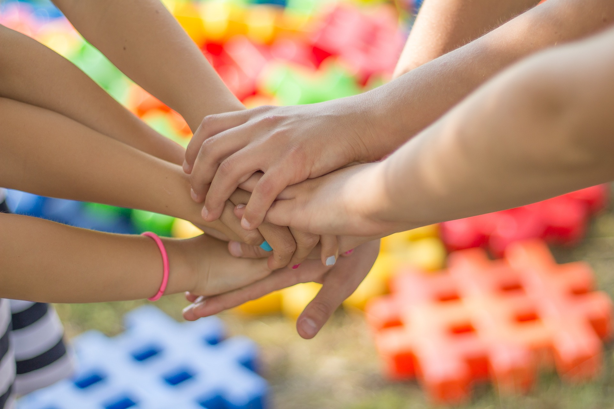
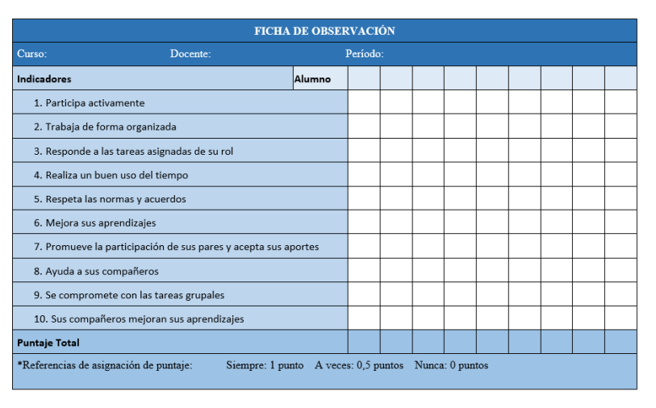

OBJETIVO

VAMOS PUBLICITAR, CREAR Y PRESENTAR NUESTRO PROYECTO DE CLUB DE MONTAÑA Y SENDERISMO EN NUESTRO CENTRO
ORGANIZACIÓN

NOS ORGANIZAREMOS EN 4 GRUPOS DE 5 MIEMBROS CADA UNO:
- GRUPO 1 PUBLICIDAD DIGITAL
- GRUPO 2 REDACTOR: REALIZA LA ENCUESTA, LA DIVULGA (PODCAST) Y REGISTRA DOCUMENTALMENTE LOS INTERESADOS
- GRUPO 3 CONSEGUIDOR DE RECURSOS: DESARROLLA LOGOTIPO, SLOGAN Y CONSIGUE LA UNIFORMIDAD, MERCHANDISING Y EQUIPO DISITINTIVO
- GRUPO 4 ELABORA UN SCAPE ROOM Y DISEÑA Y REALIZA LA PRESENTACIÓN DEL GRUPO DE MONTAÑA.
En cada grupo habrá los siguiente roles que iran rotando en cada sesión:
- Coordinador: Organiza el trabajo, distribuye tareas, modera las discusiones.
- Secreario: Toma notas, registra acuerdos, redacta conclusiones.
- Portavoz: Se comunica con el/la docente y presenta los resultados al resto de la clase.
- Responsable del material y control de tiempo: Gestiona el tiempo asignado para cada tarea y sesión.
- obsevador y verificador:Se asegura de que todos entienden y Evalúa el funcionamiento del grupo.
IMPORTANTE: Se rotarán los roles cada sesión. De este modo todos desarrollaran las responsabilidades de cada puesto. Eso significa que en la puesta en común de cada sesión habrá un portavoz diferente.
LISTA DE OBSERVACIÓN TRABAJO EN EQUIPO

AQUÍ ENCONTRARÁS INFORMACIÓN COMPLETA SOBRE ESTA METODOLOGÍA:
EQUIPO 1 TAREAS, HERRAMIENTAS Y RÚBRICAS
TAREAS Y HERRAMIENTAS GRUPO 1:
1º-Crear el blog/web del club de montaña de nuestro IES. Se propone la herramienta BLOGGER.
El blog debe incluir como mínimo la siguiente información:
- "Quienes somos"
- La forma de inscribirse en el club (con un modelo de solicitud descargable)
- Enlace a la web del centro educativo.
- Contador de visitantes.
- Información sobre las rutas y actividades de próxima realizaciónh. Deben incluirse las rutas, con fechas, transporte y nivel de dificultad (pueden ponerse enlaces a web donde figuren los itinerarios.
- Información sobre las rutas ya realizadas. (En el momento inicial basta con tener configurado este apartado y poner información sobre la actividad de senderismo al monsacro.)
2º-Elaborar una infografía interactiva con audio, fotos, imágenes y animaciones del proyecto. Se propone la herramienta CANVAS. Infografía publicitaria en la que debe como mínimo constar:
- nombre del centro,
- quienes somos,
- nuestros objetivos,
- enlace a solicitud para inscirbirse,
- enlace al Blog,
- enlace a la web del centro.
HERRAMIENTAS DE APOYO:
RÚBRICA BLOG
RÚBRICA INFOGRAFÍA
EQUIPO 2 TAREAS , HERRAMIENTAS Y RÚBRICAS
- Redactar un guion y elaborar un podcast para la radio del centro educativo. nos coordinaremos con el proyecto de centro que lleva el podcast, vosotros/as lo vais a grabar. Se propone las herramientas de edición del club de radio del IES (AUDACITY) El podcast debe incluir:
- Saludo y presentación
- Bloques de contenido:
- Tema a tratar: Creacción club de montaña.
- Piezas: Inciativa, Naturaleza y medioambiente en Asturias, datos de senderimos y montañismo en Asturias, objetivos, formas de inscripción y participación, rutas actividades previstas.
- Despedida
El pdocast debe incluir sonidos (aplausos, risas, sonidos de naturaleza) así como un melodía
-. Redactar una encuesta sencilla para saber cuantas personas estarían interesadas en formar parte del club. la encuesta tiene que tener un mínimo de 5 preguntas.Crear una hoja registro para anotar todos los miembros de la comunidad educativa, interesados en el club de montaña la encuesta debe ser visible y ponerse el en Hall de entrada de centro, así como en la sala de profesores, tarea está ultima que realizará en tutor, se debe recabar y recoger todos los datos en una hoja excel.
La encuesta debe incluir: Nombre y apellidos de los interesados, si forma parte del profesorado o del alumnado, en este último caso debe incluir el curso al que pertenece.
El equipo debe encargarse de la distribución de la encuesta y el registro de los datos en una hoja excel.
HERRAMIENTAS
Además de las herramientas presentadas a continucación, pinchando en el icono de lectura facilitada encontrarás un guión podcast así como pdf de consejos para su elaboración.
CONSEJOS PARA GRABAR UN PODCAST
GUIA PODCAST PROYECTO IES PICASSO
RÚBRICA PODCAST
Lectura facilitada
EQUIPO 3 TAREAS, HERRAMIENTAS Y RÚBRICAS
- Diseñar y conseguir ropa (camisetas, chadal, etc) y equipo distintivo (chapas, pañuelos, pins, tazas, etc) buscar 3 empresas que hagan este material, elaborar un informe con su dirección web, productos que hacen y precios.
Por medio de un buscador debes encontrar empresas, lo importante es ver que productos ofrecen, qué precios y qué plazos tienen de entrega. Debe constar los datos y dirección de las empresas, así como sus direciones web. Se debe procurar, si es posible, que tengan local en nuestro barrio (favorecer el comercio local) Por tanto se debe documetar:
- Empresas (nombre y datos de contacto)
- Productos(productos diferenciados con precios/unidad y descuentos en su caso)
- Plazos y métodos de pago
- El formato debe permitir una rápida comparativa.
Los productos que nos interesan son: camisetas, sudaderas, gorras, gafas de sol, calcetines, etc.
Hay que registrar toda la información en un documento (tabla word)
- Diseñar un juego en 2d ó en 3d para promocionar el club e incluirlo en la web, o bien, diseñar una scape room digital sobre temas de montaña y senderismo en Asturias para dar publicidad al club e incluirlo en la web. Se propone la herramienta GENEALLY.
Debe ser sencillo, jugable amigable.
HERRAMIENTAS
RÚBRICA SCAPE ROOM
EQUIPO 4 TAREAS, HERRAMIENTAS Y RÚBRICAS
-Selección de Tres rutas de senderismo para realizar una cada trimestre del curso 2026/2027, y elaborar folletos informativos.
Realizar diptico o tríptico con: Nombre de la ruta, fecha, lugar de inicio, transporte, coste,dificultad, descripición y tlf de contacto. Se propone la herramienta plantillas de WORD.
-Presentación del proyecto en el salón de actos.
En la presentación intervendrán todos los miembros del equipo. Se realizará una presentación digital (power point, Canva, etc.) de un máximo de 10 diapositivas, tiene que incluir como mínimo:
- Un elemento motivador inicial
- Una descripción de nuestro proyecto e importancia para el centro
- Una referencia al entorno natural asturiano.
- Una indicación de cómo inscribirse y participar
- Una exposición de posibles rutas
- Una diapositiva final motivadora
Debe incluir imágenes, videos, animaciones, transiciones y música
HERRAMIENTAS:
RÚBRICA FOLLETO
RÚBRICA PRESENTACIÓN
Lectura facilitada
SEGUIMIENTO CALENDARIO
PRIMERA SESIÓN
ORGANIZACIÓN
El docente, expondrá el objetivo de creacción de un club de motaña y senderismo. Expondrá la metodología aprendizaje y servicio y trabajo en equipo colaborativo. Formará los equipos, informando sobre los roles, tareas, herramientas, rúbricas, evaluación y plazos.
RESTO SESIONES
ORGANIZACIÓN
En el aula TIC, reservada al efecto se llevará a cabo el trabajo de los equipos. Cada sesión comenzará con la puesta en común del cada portavoz, indicando los avances y problemas en las tareas asignadas a cada equipo, se ha de tener encuenta las notas de los secretarios y de los observadoes. Hay que tener encuenta que los roles asignados cambian en cada sesión. El docente ayudará facilitando herramientas o aconsejando sobre su utilización. La puesta en común no es de más de 10 minutos. El resto de la Sesión se continúa el trabajo.
Se recuerda que son 8 sesiones desde el 14 de abril al 15 de mayo de 2026. Hay una sesión final de reflexión final sobre el trabajo realizado, analizando los desafíos y problemas, así como el grado de satisfacción alcanzado.
PRESENTACIÓN FINAL
FINALMENTE PRESENTAREMOS EL CLUB DE MONTAÑA
RETROALIMENTACIÓN
REFLEXIONAREMOS SOBRE LAS DIFICULTADES Y ANALIZAREMOS NUESTROS ERRORES Y LO QUE HEMOS APRENDIDO